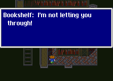
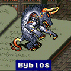

Story Line (1)
อีกด้านของอุกาบาต
Kanak
เก็บ Learning Magic 1 เวทย์ คือ
???? จาก Wild Nack บริเวณป่า (เวทย์นี้เมื่อโจมตีจะไม่มีชื่อแสดง
ต้องสังเกตุดีๆ)
เมื่อเข้าไปภายในหมู่บ้าน เมื่อเข้าไปซื้อของในร้านค้า จะโดนจับ
เพราะมีคนเห็นพวก Butz เดินออกมาจากอุกาบาต จึงคิดว่าเป็นผู้ร้าย
แต่ภายในคุกจะได้พบกับ Cid และจะได้รับการปล่อยตัว
Cid เป็นหัววิศวกรประจำเมือง Kanak
แต่เขากลับบอกให้พระราชาลดการใช้พลังจาก Crystal ไฟ จึงทำให้โดนคุมขัง
เมื่อออกมาจากคุก Cid จะบอกทางลับในการเข้าไปยังห้อง Crystal
เพื่อหยุดการทำงานของเครื่องยนต์ โดยต้องเข้าไปทางเรือกลไฟ
ภายใน Pub ของหมู่บ้าน Kanak จะมี Piano03 ให้เล่นด้วย
* Note : อย่าลืมเล่น Piano ให้ครบทุกอันด้วย จะได้ Song
เป็นของตอบแทน
Fire-Powered Ship (เรือกลไฟ)
ภายในเรือกลไฟจะมีศัตรูอยู่มากมาย
และเส้นทางบางแห่งต้องใช้ Trick ในการเข้าไปให้ถึงภายใน
ภายในเรือกลไฟจะมี Learning Magic ให้เก็บ 2 เวทย์ คือ
Flash จาก Crew Dust (หากก่อนหน้านี้ไม่ได้เก็บ)
Exploder จาก Motor Trap
สามารถเจอ Motor Trap ได้ หลังจากกำจัด Defeater
และต้องใช้สายฟ้าโจมตีใส่ Motor Trap มันจึงจะใช้ Exploder
* Note : ภายในเรือกลไฟจะมีแผนที่ให้เก็บด้วย หากไม่ได้เก็บมาจากสุสานเรือ
Boss : LiqudFlame
HP : 3000
Weakness : Ice
เมื่อปราบได้ Crystal ไฟ จะถูกทำลาย ทำให้ปราสาท Kanak ถล่ม
ต้องรีบหนีออกจากปราสาทให้ทันภายในเวลา 10 นาที
Kanak Castle
ภายในจะมีหีบสมบัติให้เก็บมากมาย
ส่วนใหญ่จะเป็นของดีทั้งนั้น เช่น Elixir, Ribbon, เวทย์ขาว Heal (Esna)
เก็บ Learning Magic 3 เวทย์ คือ
Aero จาก Gigas
Aero2 จาก Gigas
Deth Claw (Doom Claw) จาก Iron Claw
สามารถเจอ Iron Claw ได้ หลังจากที่โจมตี Sergeant ไปได้ระยะหนึ่ง
Sergeant จะเปลี่ยนร่างเป็น Iron Claw
Boss : Sergeant - - -> Iron Claw

HP : 1,000
เมื่อครบ 10 นาที ปราสาทจะระเบิด ทำให้กำแพงที่กั้นอยู่พัง สามารถเดินผ่านไปได้
Get 3 jobs
Ninja
Mediator (Trainer)
Geomancer
* Note : อาชีพและ Ability ที่น่าใช้ตอนนี้คือ
Mediator เก็บ Ability ให้ได้ Control จะสามารถบังคับศัตรูให้ใช้คำสั่งอะไรก็ได้
Geomancer ใช้ Terrain โจมตีศัตรูได้อย่างดี ไม่เปลือง MP
Ancient Library
ภายในจะได้ข่าวว่า Mid หลานชายของ Cid ลงไปยังห้องใต้ดิน
แต่ยังไม่กลับขึ้นมาเลย ให้พวกของ Butz ออกค้นหา
เก็บ Learning Magic 3 เวทย์ คือ
Aqua Rake จาก D.Chimera บริเวณ ทะเลทราย
Fusion จาก Mithril Dragon บริเวณ ป่ารอบๆ
ห้องสมุด
Aero 2 จาก Page 32 ภายในห้องสมุด
L5 Doom จาก Page 64 ภายในห้องสมุด
Moon Flute จาก Page 256 ภายในห้องสมุด
Hammer (Magic Hammer) จาก Byblos ภายในห้องสมุด
* Note : วิธีเก็บ Fusion จาก Mithril Dragon ต้องใช้คำสั่ง Control
ของ Mediator
ภายใน ทางบางแห่งอาจดูเหมือนตัน ไปต่อไม่ได้
ให้ลองเดินสำรวจให้ทั่วๆ จะทำให้ชั้นหนังสือเลื่อนเปิดทางให้ได้
แต่จะมีอยู่แห่งหนึ่ง ซึ่งมีพลังบางอย่าง ทำให้ชั้นหนังสือเลื่อนมาปิดทาง

ต้องกลับออกไปหา Ifrit เสียก่อน
(บริเวณนี้สามารถเข้าไปได้)
(ภายในจะเจอหนังสือเล่มหนึ่ง)
Boss : Ifrit
HP : 3,000
Weakness : Water, Ice
เมื่อได้ Ifrit แล้ว กลับไปยังชั้นหนังสือนั้น จะสามารถไปต่อได้
Boss : Byblos

HP : 3,600
Weakness : Holy, Fire
เมื่อปราบได้จะเจอกับ Mid หลานชายของ Cid
Mid บอกให้ไปปกป้อง Crystal ดิน และให้ไปหา Cid
Kanak
กลับมายัง Pub ในหมู่บ้าน Kanak เพื่อหา Cid
เมื่อพบ Cid ปรากฏว่า หลังจาก Crystal ไฟแตก เขาหมดกำลังใจในการทำสิ่งต่างๆ
แต่ Mid ได้เข้ามาพูดให้เขามีกำลังใจขึ้นมา
Fire-Powered Ship (เรือกลไฟ)
กลับเข้าไปในเรือกลไฟ Cid และ Mid ได้ปรับปรุงเรือให้สามารถแล่นได้
ในระหว่างนั้น พวก Butz กำลังพักผ่อน
Galuf บอกว่า ความทรงจำของเขากลับคืนมาแล้ว
แท้จริงเขาเป็นคนโลกอื่น เดินทางมายังโลกโดยอุกาบาต
เพื่อมาหยุดยั้ง Exdeath ที่จะฟื้นคืนชีพขึ้นมา
เพราะ Crystal ทั้ง 4 ที่ปิดผนึกกำลังจะถูกทำลาย
โดยในอดีตนั้น มีผู้กล้า 4 คน ได้ต่อสู้กับความชั่วร้าย และปิดผนึกไว้
ซึ่ง Galuf ก็เป็น 1 ในผู้กล้าทั้ง 4 นั้นด้วย
เมื่อตื่นขึ้นมาตอนเช้า พบว่า เรือได้รับการปรับปรุงแล้ว
ตอนนี้กลายเป็นเรือไอน้ำ สามารถแล่นได้โดยไม่ต้องใช้ลม
จุดมุ่งหมายต่อไปคือ ค้นหา Crystal ดิน
Next Story
2